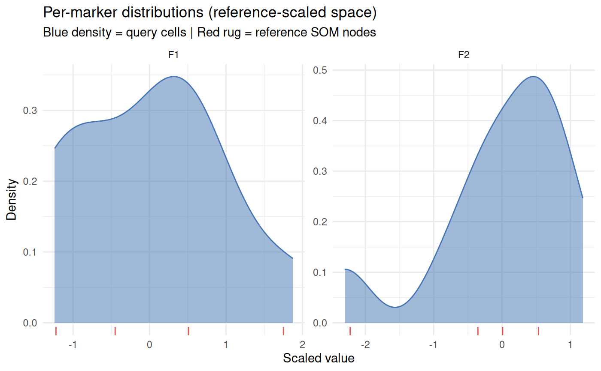

Plot per-marker cell distributions before projection
Source:R/plot.R
somalign_plot_marker_distributions.RdDensity plot of query cells (reference-scaled, downsampled) faceted by
marker. When a somalign_reference object is supplied via reference, the
reference SOM code values for that marker are overlaid as a rug of node
prototypes (red tick marks). When raw reference cell data are available,
pass them as reference_data for a true cell-vs-cell density comparison.
Usage
somalign_plot_marker_distributions(
query,
reference = NULL,
reference_data = NULL,
features = NULL,
downsample = 2000L,
seed = 1L
)Arguments
- query
A
somalign_queryobject.- reference
Optional
somalign_referenceobject. When supplied, its SOM codebook values are shown as a rug of node prototypes.- reference_data
Optional numeric matrix of reference cells in reference-scaled space (cells x features). When supplied, a second density curve is shown instead of the codebook rug. Takes precedence over
reference.- features
Character vector of features to plot.
NULL(default) uses all features inquery.- downsample
Maximum number of cells to subsample from
query(andreference_datawhen supplied) for plotting speed. Default2000.- seed
Integer seed for the random subsample. Default
1.
Examples
set.seed(1)
mat <- matrix(rnorm(20), nrow = 10, ncol = 2,
dimnames = list(NULL, c("F1", "F2")))
ref <- somalign_train_reference(mat, grid = kohonen::somgrid(2, 2, "hexagonal"),
rlen = 5)
qry <- somalign_query(mat, ref, grid = kohonen::somgrid(2, 2, "hexagonal"),
rlen = 5)
#> somalign_reference_from_som: SOM has no second code layer; label transfer will be disabled.
somalign_plot_marker_distributions(qry, reference = ref)
